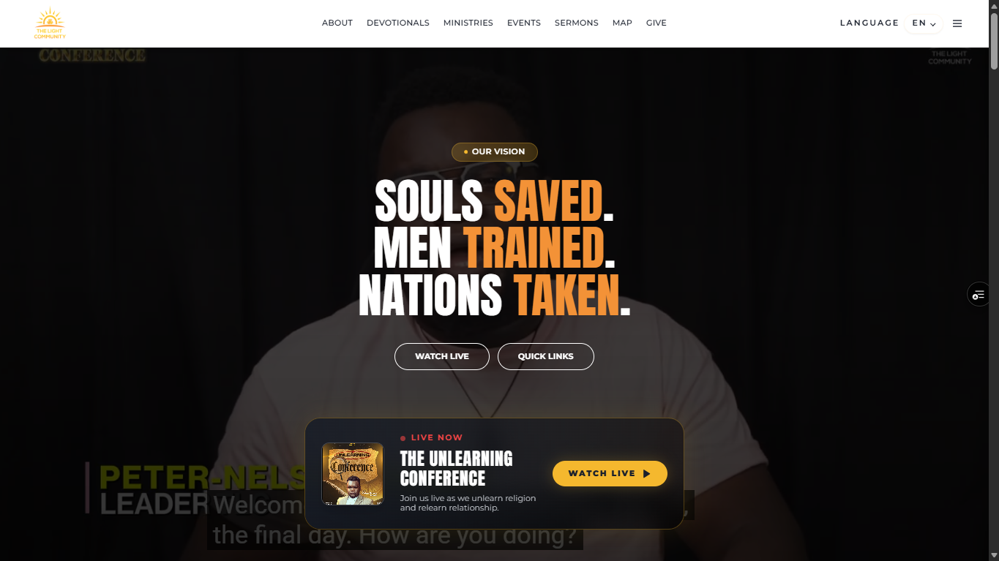
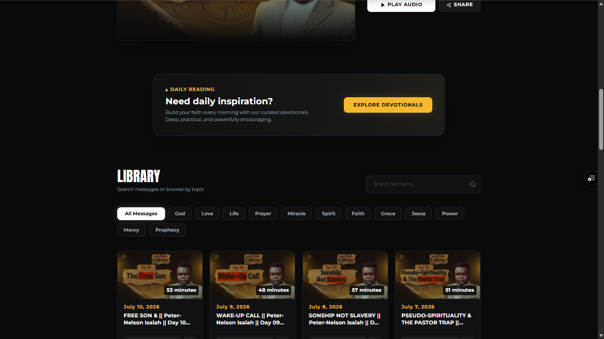
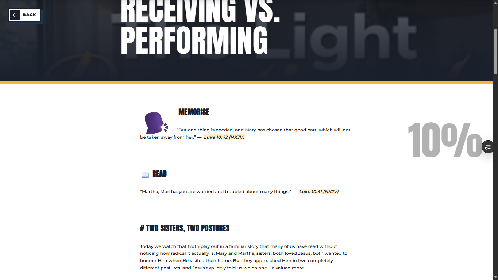
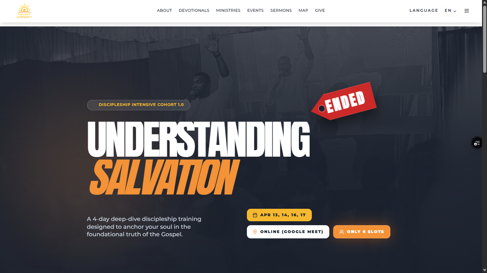

TLCC
The digital home of The Light Community Church—live services, sermons, devotionals, ministries, events and online giving—built to carry the church’s reach beyond its Lagos base.




Context
The church streams sermons every Tuesday and Saturday at 9 PM, so its website had to match the reach of the broadcast—clear entry into sermons, devotionals, ministries and giving, fast enough that nobody leaves before the first page paints.
What I built
The full frontend of the site: about, devotionals, ministries, events, sermons, a location/map page and a giving flow wired to Paystack and Flutterwave, plus a newsletter path and contact flows. Next.js and TypeScript kept the codebase structured, with the focus on client-side performance and dynamic, real-time content delivery.
Why this approach
A ministry site lives or dies on speed and clarity. Pre-rendered pages where it counts, a tight real-time layer for live services and updates, and interactions kept simple enough that a visitor hits watch, give or subscribe in one or two taps.
Role & scope
Lead frontend engineering as the sole client-side engineer—platform architecture, performance and the user experience across every page.
Result
A site that carries the church’s mission online: sermons and live services reachable in seconds, giving frictionless, and a platform built to grow with the ministry.